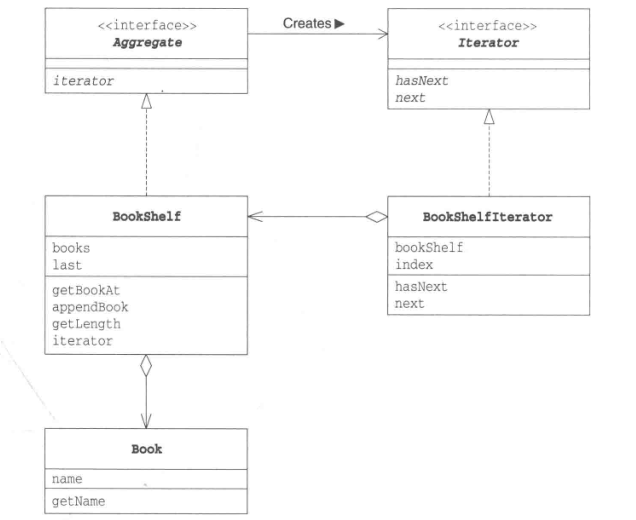
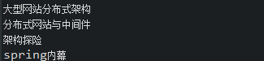

2018-1-9设计模式(七)————————Iterator模式学习笔记
结构
迭代器模式用于数组集合中按照顺序来遍历集合，方便输出。效果跟for的使用方式差不多，此方法就相当于指针，通过next方法指向下一个对象。
以下示例类图:

Iterator:迭代器接口，主要是定义了hasNext和next俩个方法。
BookShelfIterator:具体的书架中书本的迭代类接口，实现了Iterator接口。同时，也依赖了BookShelf书架类。
Aggregate:集合接口，定义了Iterator。
BookShelf:书架类实现类集合，用来创建了自定义的迭代器类。
Book:书本对象，包含名字
代码实现
Iterator类
public interface Iterator {
public abstract boolean hasNext();
public abstract Object next();
}
BookShelfIterator类
public class BookShelfIterator implements Iterator{
private BookShelf bookshelf;
private int index;
public BookShelfIterator(BookShelf bookshelf){
this.bookshelf = bookshelf;
this.index =0;
}
@Override
public boolean hasNext() {
if(index < bookshelf.getLength()){
return true;
}else{
return false;
}
}
@Override
public Object next() {
Book book = bookshelf.getBookAt(index);
index ++;
return book;
}
}
Aggregate类
public interface Aggregate {
public abstract Iterator iterator();
}
BookShelf类
public class BookShelf implements Aggregate{
private Book[] books;
private int last = 0;
public BookShelf(int maxsize){
this.books = new Book[maxsize];
}
public Book getBookAt(int index){
return books[index];
}
public void appendBook(Book book){
this.books[last] = book;
last++;
}
public int getLength(){
return last;
}
@Override
public Iterator iterator() {
return new BookShelfIterator(this);
}
}
Book类
public class Book {
private String name;
public Book(String name){
this.name = name;
}
public String getName(){
return name;
}
}
Main类
public class Main {
public static void main(String[] args){
BookShelf bookShelf = new BookShelf(4);
bookShelf.appendBook(new Book("大型网站分布式架构"));
bookShelf.appendBook(new Book("分布式网站与中间件"));
bookShelf.appendBook(new Book("架构探险"));
bookShelf.appendBook(new Book("spring内幕"));
Iterator it = bookShelf.iterator();
while(it.hasNext()){
Book book = (Book)it.next();
System.out.println(book.getName());
}
}
}
运行结果

上述迭代器的具体实现是通过Iterator的hasNext和next方法，不依赖于具体实现(BookShelfIterator类)，方便于拓展和自定义规则。这样也可以理解,为什么在BookShelfIterator类中的iterator方法中返回的是Iterator。
关键字词：设计模式、Iterator、迭代器